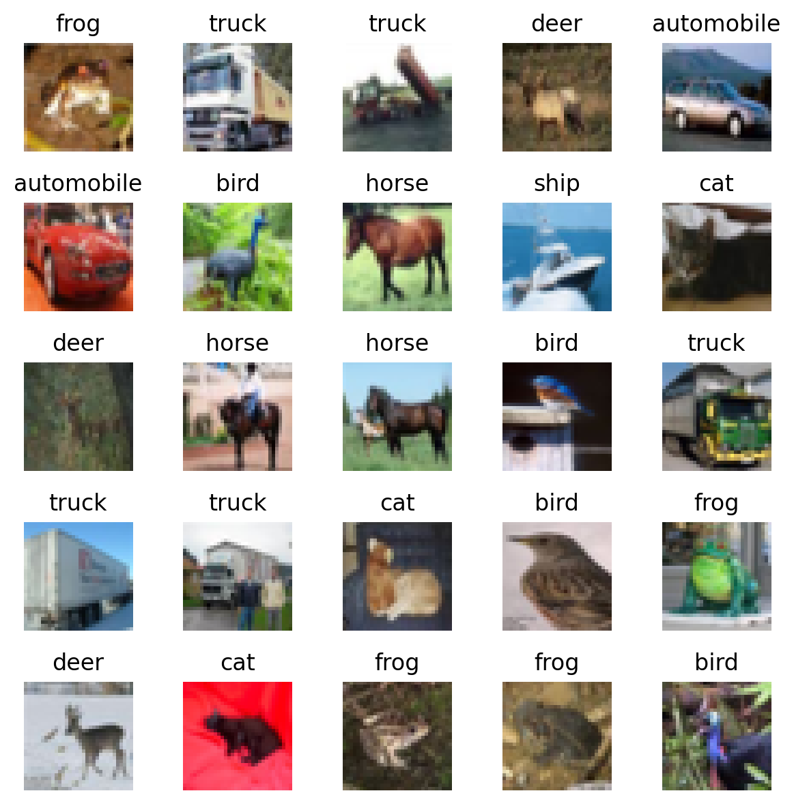
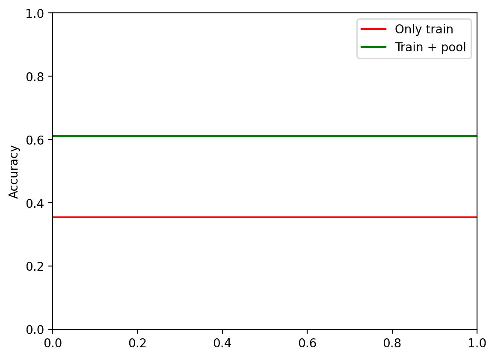

try:
from astra.torch.models import ResNetClassifier
except:
%pip install git+https://github.com/sustainability-lab/ASTRAActive Learning
Imports
import os
os.environ["CUDA_VISIBLE_DEVICES"] = "2"
import torch
import torch.nn as nn
import torch.nn.functional as F
import torch.optim as optim
import torchvision
import torchvision.models as models
import torchvision.transforms as transforms
import matplotlib.pyplot as plt
import os
import numpy as np
import pandas as pd
%matplotlib inline
# Retina display
%config InlineBackend.figure_format = 'retina'
# Confusion matrix
from sklearn.metrics import confusion_matrix
from sklearn.metrics import ConfusionMatrixDisplay
import torchsummary
from tqdm import tqdm
import umap
# ASTRA
from astra.torch.data import load_cifar_10
from astra.torch.utils import train_fn
from astra.torch.models import ResNetClassifier
# Netron, ONNX for model visualization
try:
import netron
except ModuleNotFoundError:
%pip install netron
import netron
try:
import onnx
except ModuleNotFoundError:
%pip install onnx
import onnx
import copy/home/patel_zeel/ASTRA/astra/torch/data.py:12: UserWarning: TORCH_HOME not set, setting it to /home/patel_zeel/.cache/torch
warnings.warn(f"TORCH_HOME not set, setting it to {os.environ['TORCH_HOME']}")device = torch.device("cuda" if torch.cuda.is_available() else "cpu")
devicedevice(type='cuda')Dataset
dataset = load_cifar_10()
datasetFiles already downloaded and verified
Files already downloaded and verified
CIFAR-10 Dataset
length of dataset: 60000
shape of images: torch.Size([3, 32, 32])
len of classes: 10
classes: ['airplane', 'automobile', 'bird', 'cat', 'deer', 'dog', 'frog', 'horse', 'ship', 'truck']
dtype of images: torch.float32
dtype of labels: torch.int64
# Plot some images
plt.figure(figsize=(6, 6))
for i in range(25):
plt.subplot(5, 5, i+1)
plt.imshow(torch.einsum("chw->hwc", dataset.data[i].cpu()))
plt.axis('off')
plt.title(dataset.classes[dataset.targets[i]])
plt.tight_layout()
Data splitting
n_train = 1000
n_test = 20000
X = dataset.data
y = dataset.targets
print(X.shape)
print(X.shape, X.dtype)
print(X.min(), X.max())
print(y.shape, y.dtype)torch.Size([60000, 3, 32, 32])
torch.Size([60000, 3, 32, 32]) torch.float32
tensor(0.) tensor(1.)
torch.Size([60000]) torch.int64torch.manual_seed(0)
idx = torch.randperm(len(X))
train_idx = idx[:n_train]
pool_idx = idx[n_train:-n_test]
test_idx = idx[-n_test:]
print(f"Length of train set: {len(train_idx)}")
print(f"Length of pool set: {len(pool_idx)}")
print(f"Length of test set: {len(test_idx)}")Length of train set: 1000
Length of pool set: 39000
Length of test set: 20000resnet = ResNetClassifier(models.resnet18, models.ResNet18_Weights.DEFAULT, n_classes=10).to(device)/home/patel_zeel/miniconda3/envs/torch_gpu_py311/lib/python3.11/site-packages/torch/cuda/__init__.py:611: UserWarning: Can't initialize NVML
warnings.warn("Can't initialize NVML")torchsummary.summary(resnet, (3, 32, 32))----------------------------------------------------------------
Layer (type) Output Shape Param #
================================================================
Conv2d-1 [-1, 64, 16, 16] 9,408
BatchNorm2d-2 [-1, 64, 16, 16] 128
ReLU-3 [-1, 64, 16, 16] 0
MaxPool2d-4 [-1, 64, 8, 8] 0
Conv2d-5 [-1, 64, 8, 8] 36,864
BatchNorm2d-6 [-1, 64, 8, 8] 128
ReLU-7 [-1, 64, 8, 8] 0
Conv2d-8 [-1, 64, 8, 8] 36,864
BatchNorm2d-9 [-1, 64, 8, 8] 128
ReLU-10 [-1, 64, 8, 8] 0
BasicBlock-11 [-1, 64, 8, 8] 0
Conv2d-12 [-1, 64, 8, 8] 36,864
BatchNorm2d-13 [-1, 64, 8, 8] 128
ReLU-14 [-1, 64, 8, 8] 0
Conv2d-15 [-1, 64, 8, 8] 36,864
BatchNorm2d-16 [-1, 64, 8, 8] 128
ReLU-17 [-1, 64, 8, 8] 0
BasicBlock-18 [-1, 64, 8, 8] 0
Conv2d-19 [-1, 128, 4, 4] 73,728
BatchNorm2d-20 [-1, 128, 4, 4] 256
ReLU-21 [-1, 128, 4, 4] 0
Conv2d-22 [-1, 128, 4, 4] 147,456
BatchNorm2d-23 [-1, 128, 4, 4] 256
Conv2d-24 [-1, 128, 4, 4] 8,192
BatchNorm2d-25 [-1, 128, 4, 4] 256
ReLU-26 [-1, 128, 4, 4] 0
BasicBlock-27 [-1, 128, 4, 4] 0
Conv2d-28 [-1, 128, 4, 4] 147,456
BatchNorm2d-29 [-1, 128, 4, 4] 256
ReLU-30 [-1, 128, 4, 4] 0
Conv2d-31 [-1, 128, 4, 4] 147,456
BatchNorm2d-32 [-1, 128, 4, 4] 256
ReLU-33 [-1, 128, 4, 4] 0
BasicBlock-34 [-1, 128, 4, 4] 0
Conv2d-35 [-1, 256, 2, 2] 294,912
BatchNorm2d-36 [-1, 256, 2, 2] 512
ReLU-37 [-1, 256, 2, 2] 0
Conv2d-38 [-1, 256, 2, 2] 589,824
BatchNorm2d-39 [-1, 256, 2, 2] 512
Conv2d-40 [-1, 256, 2, 2] 32,768
BatchNorm2d-41 [-1, 256, 2, 2] 512
ReLU-42 [-1, 256, 2, 2] 0
BasicBlock-43 [-1, 256, 2, 2] 0
Conv2d-44 [-1, 256, 2, 2] 589,824
BatchNorm2d-45 [-1, 256, 2, 2] 512
ReLU-46 [-1, 256, 2, 2] 0
Conv2d-47 [-1, 256, 2, 2] 589,824
BatchNorm2d-48 [-1, 256, 2, 2] 512
ReLU-49 [-1, 256, 2, 2] 0
BasicBlock-50 [-1, 256, 2, 2] 0
Conv2d-51 [-1, 512, 1, 1] 1,179,648
BatchNorm2d-52 [-1, 512, 1, 1] 1,024
ReLU-53 [-1, 512, 1, 1] 0
Conv2d-54 [-1, 512, 1, 1] 2,359,296
BatchNorm2d-55 [-1, 512, 1, 1] 1,024
Conv2d-56 [-1, 512, 1, 1] 131,072
BatchNorm2d-57 [-1, 512, 1, 1] 1,024
ReLU-58 [-1, 512, 1, 1] 0
BasicBlock-59 [-1, 512, 1, 1] 0
Conv2d-60 [-1, 512, 1, 1] 2,359,296
BatchNorm2d-61 [-1, 512, 1, 1] 1,024
ReLU-62 [-1, 512, 1, 1] 0
Conv2d-63 [-1, 512, 1, 1] 2,359,296
BatchNorm2d-64 [-1, 512, 1, 1] 1,024
ReLU-65 [-1, 512, 1, 1] 0
BasicBlock-66 [-1, 512, 1, 1] 0
AdaptiveAvgPool2d-67 [-1, 512, 1, 1] 0
Identity-68 [-1, 512] 0
ResNet-69 [-1, 512] 0
Flatten-70 [-1, 512] 0
ResNet-71 [-1, 512] 0
Linear-72 [-1, 512] 262,656
ReLU-73 [-1, 512] 0
Dropout-74 [-1, 512] 0
MLP-75 [-1, 512] 0
Linear-76 [-1, 10] 5,130
MLPClassifier-77 [-1, 10] 0
================================================================
Total params: 11,444,298
Trainable params: 11,444,298
Non-trainable params: 0
----------------------------------------------------------------
Input size (MB): 0.01
Forward/backward pass size (MB): 1.32
Params size (MB): 43.66
Estimated Total Size (MB): 44.98
----------------------------------------------------------------def get_accuracy(net, X, y):
# Set the net to evaluation mode
net.eval()
with torch.no_grad():
logits_pred = net(X)
y_pred = logits_pred.argmax(dim=1)
acc = (y_pred == y).float().mean()
return y_pred, acc
def predict(net, classes, plot_confusion_matrix=False):
for i, (name, idx) in enumerate(zip(("train", "pool", "test"), [train_idx, pool_idx, test_idx])):
X_dataset = X[idx].to(device)
y_dataset = y[idx].to(device)
y_pred, acc = get_accuracy(net, X_dataset, y_dataset)
print(f'{name} set accuracy: {acc*100:.2f}%')
if plot_confusion_matrix:
cm = confusion_matrix(y_dataset.cpu(), y_pred.cpu())
cm_display = ConfusionMatrixDisplay(cm, display_labels=classes).plot(values_format='d'
, cmap='Blues')
# Rotate the labels on x-axis to make them readable
_ = plt.xticks(rotation=90)
plt.show()predict(resnet, dataset.classes, plot_confusion_matrix=True)train set accuracy: 7.70%
pool set accuracy: 7.57%
test set accuracy: 7.58%def viz_embeddings(net, X, y, device):
reducer = umap.UMAP()
with torch.no_grad():
emb = net.featurizer(X.to(device))
emb = emb.cpu().numpy()
emb = reducer.fit_transform(emb)
plt.figure(figsize=(4, 4))
plt.scatter(emb[:, 0], emb[:, 1], c=y.cpu().numpy(), cmap='tab10')
# Add a colorbar legend to mark color to class mapping
cb = plt.colorbar(boundaries=np.arange(11)-0.5)
cb.set_ticks(np.arange(10))
cb.set_ticklabels(dataset.classes)
plt.title("UMAP embeddings")
plt.tight_layout()
viz_embeddings(resnet, X[train_idx], y[train_idx], device)Train the model on train set
model_only_train = ResNetClassifier(models.resnet18, None, n_classes=10, activation=nn.GELU(), dropout=0.1).to(device)
iter_losses, epoch_losses = train_fn(model_only_train, X[train_idx], y[train_idx], nn.CrossEntropyLoss(), lr=3e-4,
batch_size=128, epochs=30, verbose=False)plt.plot(iter_losses)
plt.xlabel("Iteration")
plt.ylabel("Training loss")Text(0, 0.5, 'Training loss')predict(model_only_train, dataset.classes, plot_confusion_matrix=True)train set accuracy: 100.00%
pool set accuracy: 35.53%
test set accuracy: 35.33%
viz_embeddings(model_only_train, X[train_idx], y[train_idx], device)viz_embeddings(model_only_train, X[test_idx[:1000]], y[test_idx[:1000]], device)Train on train + pool
train_plus_pool_idx = torch.cat([train_idx, pool_idx])
model_train_plus_pool = ResNetClassifier(models.resnet18, None, n_classes=10, activation=nn.GELU(), dropout=0.1).to(device)
iter_losses, epoch_losses = train_fn(model_train_plus_pool, X[train_plus_pool_idx], y[train_plus_pool_idx], loss_fn=nn.CrossEntropyLoss(),
lr=3e-4,
batch_size=1024, epochs=30)Loss: 1.318003: 100%|██████████| 40/40 [00:01<00:00, 33.50it/s]
Loss: 1.130332: 100%|██████████| 40/40 [00:01<00:00, 35.81it/s]
Loss: 0.821397: 100%|██████████| 40/40 [00:01<00:00, 36.25it/s]
Loss: 0.779279: 100%|██████████| 40/40 [00:01<00:00, 35.97it/s]
Loss: 0.862528: 100%|██████████| 40/40 [00:01<00:00, 35.12it/s]
Loss: 0.524238: 100%|██████████| 40/40 [00:01<00:00, 36.35it/s]
Loss: 0.510165: 100%|██████████| 40/40 [00:01<00:00, 36.51it/s]
Loss: 0.423117: 100%|██████████| 40/40 [00:01<00:00, 36.69it/s]
Loss: 0.458616: 100%|██████████| 40/40 [00:01<00:00, 36.86it/s]
Loss: 0.165772: 100%|██████████| 40/40 [00:01<00:00, 35.59it/s]
Loss: 0.087809: 100%|██████████| 40/40 [00:01<00:00, 35.90it/s]
Loss: 0.296134: 100%|██████████| 40/40 [00:01<00:00, 35.39it/s]
Loss: 0.319740: 100%|██████████| 40/40 [00:01<00:00, 36.15it/s]
Loss: 0.301341: 100%|██████████| 40/40 [00:01<00:00, 37.49it/s]
Loss: 0.072943: 100%|██████████| 40/40 [00:01<00:00, 36.23it/s]
Loss: 0.047622: 100%|██████████| 40/40 [00:01<00:00, 36.49it/s]
Loss: 0.031719: 100%|██████████| 40/40 [00:01<00:00, 37.51it/s]
Loss: 0.031865: 100%|██████████| 40/40 [00:01<00:00, 35.63it/s]
Loss: 0.046578: 100%|██████████| 40/40 [00:01<00:00, 37.41it/s]
Loss: 0.066532: 100%|██████████| 40/40 [00:01<00:00, 37.07it/s]
Loss: 0.128377: 100%|██████████| 40/40 [00:01<00:00, 35.39it/s]
Loss: 0.075391: 100%|██████████| 40/40 [00:01<00:00, 35.56it/s]
Loss: 0.180659: 100%|██████████| 40/40 [00:01<00:00, 33.25it/s]
Loss: 0.122659: 100%|██████████| 40/40 [00:01<00:00, 36.06it/s]
Loss: 0.116485: 100%|██████████| 40/40 [00:01<00:00, 36.39it/s]
Loss: 0.216088: 100%|██████████| 40/40 [00:01<00:00, 36.43it/s]
Loss: 0.063434: 100%|██████████| 40/40 [00:01<00:00, 36.54it/s]
Loss: 0.111266: 100%|██████████| 40/40 [00:01<00:00, 35.95it/s]
Loss: 0.039604: 100%|██████████| 40/40 [00:01<00:00, 35.99it/s]
Loss: 0.111527: 100%|██████████| 40/40 [00:01<00:00, 36.67it/s]Epoch 1: 1.636701644897461
Epoch 2: 1.2044568725585938
Epoch 3: 0.9858628723144531
Epoch 4: 0.787159913635254
Epoch 5: 0.6295903686523437
Epoch 6: 0.5099980773925781
Epoch 7: 0.3717664451599121
Epoch 8: 0.3031633331298828
Epoch 9: 0.29022122650146487
Epoch 10: 0.26079437942504885
Epoch 11: 0.13630542945861818
Epoch 12: 0.1002807499885559
Epoch 13: 0.18608614768981935
Epoch 14: 0.16239934244155885
Epoch 15: 0.14895454578399658
Epoch 16: 0.06240539264678955
Epoch 17: 0.02642523465156555
Epoch 18: 0.026696961951255798
Epoch 19: 0.03432212963104248
Epoch 20: 0.03469213643074036
Epoch 21: 0.07525548481941223
Epoch 22: 0.13279609174728393
Epoch 23: 0.07557179298400879
Epoch 24: 0.08241450214385987
Epoch 25: 0.07914679989814759
Epoch 26: 0.08806239323616027
Epoch 27: 0.11902619647979737
Epoch 28: 0.05027928895950318
Epoch 29: 0.05692305927276611
Epoch 30: 0.03280420844554901plt.plot(iter_losses)
plt.xlabel("Iteration")
plt.ylabel("Training loss")Text(0, 0.5, 'Training loss')viz_embeddings(model_train_plus_pool, X[train_idx], y[train_idx], device)viz_embeddings(model_train_plus_pool, X[test_idx[:1000]], y[test_idx[:1000]], device)predict(model_train_plus_pool, dataset.classes, plot_confusion_matrix=True)train set accuracy: 97.80%
pool set accuracy: 98.03%
test set accuracy: 61.14%accuracy_only_train = get_accuracy(model_only_train, X[test_idx].to(device), y[test_idx].to(device))[1]
accuracy_train_plus_pool = get_accuracy(model_train_plus_pool, X[test_idx].to(device), y[test_idx].to(device))[1]
plt.axhline(accuracy_only_train.cpu(), color='r', label='Only train')
plt.axhline(accuracy_train_plus_pool.cpu(), color='g', label='Train + pool')
plt.legend()
plt.ylabel("Accuracy")Text(0, 0.5, 'Accuracy')
Active learning loop
def setdiff1d(a, b):
mask = ~a.unsqueeze(1).eq(b).any(dim=1)
return torch.masked_select(a, mask)
a = torch.tensor([1, 2, 3, 4, 5])
b = torch.tensor([1, 3, 5])
print(setdiff1d(a, b))
a = torch.tensor([1, 2, 3, 4, 5])
b = torch.tensor([1, 2, 3, 4, 5])
print(setdiff1d(a, b))tensor([2, 4])
tensor([], dtype=torch.int64)def al_loop(model, query_strategy, num_al_iterations, num_epochs_finetune,
train_idx, pool_idx, test_idx, query_size,
X, y, device, random_seed=0, verbose=False):
"""
model: PyTorch model trained on train_idx
query_strategy: function that takes in model and pool_idx,
train_idx and returns indices to query
num_al_iterations: number of active learning iterations
num_epochs_finetune: number of epochs to train on queried data + train_idx
train_idx: indices of data used for training
pool_idx: indices of data used for querying
test_idx: indices of data used for testing
query_size: number of data points to query at each iteration
X: data
y: labels
device: torch device
random_seed: random seed
verbose: print statements
"""
tr_idx = train_idx.clone()
p_idx = pool_idx.clone()
torch.manual_seed(random_seed)
print(f"Initial train size: {train_idx.shape}")
print(f"Initial pool size: {pool_idx.shape}")
# Initial model test accuracy
init_accuracy = get_accuracy(model, X[test_idx].to(device), y[test_idx].to(device))[1].item()
print(f"Test accuracy before AL: {init_accuracy:0.4f}")
# Test accuracies
test_accuracies = {0: init_accuracy}
for iteration in range(num_al_iterations):
# Query
model.eval()
query_idx = query_strategy(model, p_idx, tr_idx, random_seed, query_size, X, y, device)
# Add queried data to train_idx
tr_idx = torch.cat([tr_idx, query_idx])
# Remove queried data from pool_idx
p_idx = setdiff1d(p_idx, query_idx)
# Retrain model on pooled data
iter_losses, epoch_losses = train_fn(model, X[tr_idx], y[tr_idx], loss_fn=nn.CrossEntropyLoss(),
lr=3e-4, batch_size=1024,
epochs=num_epochs_finetune,
verbose=False)
test_accuracies[iteration+1] = get_accuracy(model, X[test_idx].to(device), y[test_idx].to(device))[1].item()
if verbose:
print(f"Active learning iteration {iteration+1}/{num_al_iterations}")
print(f"Train set size: {len(tr_idx)}, Pool set size: {len(p_idx)}")
print(f"Test accuracy: {test_accuracies[iteration]:0.4f}")
print()
return model, tr_idx, p_idx, test_accuracies
def random_sampling(model, pool_idx, train_idx, random_seed, query_size, X, y, device):
torch.manual_seed(random_seed)
query_idx = pool_idx[torch.randperm(len(pool_idx))[:query_size]]
return query_idxquery_size = 20
num_al_iterations = 50
import copy
model_r = copy.deepcopy(model_only_train)
model, t_idx, p_idx, test_acc_random = al_loop(model_r, random_sampling, num_al_iterations, 20, train_idx, pool_idx, test_idx, query_size, X, y,device=device,verbose=True)Initial train size: torch.Size([1000])
Initial pool size: torch.Size([39000])
Test accuracy before AL: 0.3532
Active learning iteration 1/50
Train set size: 1020, Pool set size: 38980
Test accuracy: 0.3532
Active learning iteration 2/50
Train set size: 1040, Pool set size: 38960
Test accuracy: 0.3646
Active learning iteration 3/50
Train set size: 1060, Pool set size: 38940
Test accuracy: 0.2930
Active learning iteration 4/50
Train set size: 1080, Pool set size: 38920
Test accuracy: 0.3288
Active learning iteration 5/50
Train set size: 1100, Pool set size: 38900
Test accuracy: 0.3429
Active learning iteration 6/50
Train set size: 1120, Pool set size: 38880
Test accuracy: 0.3391
Active learning iteration 7/50
Train set size: 1140, Pool set size: 38860
Test accuracy: 0.3533
Active learning iteration 8/50
Train set size: 1160, Pool set size: 38840
Test accuracy: 0.3580
Active learning iteration 9/50
Train set size: 1180, Pool set size: 38820
Test accuracy: 0.3529
Active learning iteration 10/50
Train set size: 1200, Pool set size: 38800
Test accuracy: 0.3370
Active learning iteration 11/50
Train set size: 1220, Pool set size: 38780
Test accuracy: 0.3599
Active learning iteration 12/50
Train set size: 1240, Pool set size: 38760
Test accuracy: 0.3711
Active learning iteration 13/50
Train set size: 1260, Pool set size: 38740
Test accuracy: 0.3647
Active learning iteration 14/50
Train set size: 1280, Pool set size: 38720
Test accuracy: 0.3762
Active learning iteration 15/50
Train set size: 1300, Pool set size: 38700
Test accuracy: 0.3592
Active learning iteration 16/50
Train set size: 1320, Pool set size: 38680
Test accuracy: 0.3703
Active learning iteration 17/50
Train set size: 1340, Pool set size: 38660
Test accuracy: 0.3832
Active learning iteration 18/50
Train set size: 1360, Pool set size: 38640
Test accuracy: 0.3783
Active learning iteration 19/50
Train set size: 1380, Pool set size: 38620
Test accuracy: 0.3989
Active learning iteration 20/50
Train set size: 1400, Pool set size: 38600
Test accuracy: 0.3907
Active learning iteration 21/50
Train set size: 1420, Pool set size: 38580
Test accuracy: 0.3886
Active learning iteration 22/50
Train set size: 1440, Pool set size: 38560
Test accuracy: 0.3909
Active learning iteration 23/50
Train set size: 1460, Pool set size: 38540
Test accuracy: 0.3914
Active learning iteration 24/50
Train set size: 1480, Pool set size: 38520
Test accuracy: 0.3984
Active learning iteration 25/50
Train set size: 1500, Pool set size: 38500
Test accuracy: 0.4037
Active learning iteration 26/50
Train set size: 1520, Pool set size: 38480
Test accuracy: 0.4018
Active learning iteration 27/50
Train set size: 1540, Pool set size: 38460
Test accuracy: 0.4005
Active learning iteration 28/50
Train set size: 1560, Pool set size: 38440
Test accuracy: 0.3951
Active learning iteration 29/50
Train set size: 1580, Pool set size: 38420
Test accuracy: 0.4089
Active learning iteration 30/50
Train set size: 1600, Pool set size: 38400
Test accuracy: 0.4150
Active learning iteration 31/50
Train set size: 1620, Pool set size: 38380
Test accuracy: 0.3971
Active learning iteration 32/50
Train set size: 1640, Pool set size: 38360
Test accuracy: 0.4115
Active learning iteration 33/50
Train set size: 1660, Pool set size: 38340
Test accuracy: 0.4040
Active learning iteration 34/50
Train set size: 1680, Pool set size: 38320
Test accuracy: 0.4166
Active learning iteration 35/50
Train set size: 1700, Pool set size: 38300
Test accuracy: 0.4111
Active learning iteration 36/50
Train set size: 1720, Pool set size: 38280
Test accuracy: 0.4158
Active learning iteration 37/50
Train set size: 1740, Pool set size: 38260
Test accuracy: 0.4119
Active learning iteration 38/50
Train set size: 1760, Pool set size: 38240
Test accuracy: 0.4155
Active learning iteration 39/50
Train set size: 1780, Pool set size: 38220
Test accuracy: 0.4022
Active learning iteration 40/50
Train set size: 1800, Pool set size: 38200
Test accuracy: 0.4122
Active learning iteration 41/50
Train set size: 1820, Pool set size: 38180
Test accuracy: 0.4129
Active learning iteration 42/50
Train set size: 1840, Pool set size: 38160
Test accuracy: 0.4187
Active learning iteration 43/50
Train set size: 1860, Pool set size: 38140
Test accuracy: 0.4152
Active learning iteration 44/50
Train set size: 1880, Pool set size: 38120
Test accuracy: 0.4195
Active learning iteration 45/50
Train set size: 1900, Pool set size: 38100
Test accuracy: 0.4227
Active learning iteration 46/50
Train set size: 1920, Pool set size: 38080
Test accuracy: 0.4348
Active learning iteration 47/50
Train set size: 1940, Pool set size: 38060
Test accuracy: 0.4250
Active learning iteration 48/50
Train set size: 1960, Pool set size: 38040
Test accuracy: 0.4243
Active learning iteration 49/50
Train set size: 1980, Pool set size: 38020
Test accuracy: 0.4245
Active learning iteration 50/50
Train set size: 2000, Pool set size: 38000
Test accuracy: 0.4189
pd.Series(test_acc_random).plot()<Axes: >### Now, running across multiple random seeds
query_size = 20
num_al_iterations = 50
ms = {}
t_idxs = {}
p_idxs = {}
test_acc_random = {}
for rs in range(5):
print(f"Random seed: {rs}")
model = copy.deepcopy(model_only_train)
ms[rs], t_idxs[rs], p_idxs[rs], test_acc_random[rs] = al_loop(model, random_sampling, num_al_iterations, 20, train_idx, pool_idx, test_idx, query_size, X, y,device=device,verbose=False, random_seed=rs)Random seed: 0
Initial train size: torch.Size([1000])
Initial pool size: torch.Size([39000])
Test accuracy before AL: 0.3532
Random seed: 1
Initial train size: torch.Size([1000])
Initial pool size: torch.Size([39000])
Test accuracy before AL: 0.3532
Random seed: 2
Initial train size: torch.Size([1000])
Initial pool size: torch.Size([39000])
Test accuracy before AL: 0.3532
Random seed: 3
Initial train size: torch.Size([1000])
Initial pool size: torch.Size([39000])
Test accuracy before AL: 0.3532
Random seed: 4
Initial train size: torch.Size([1000])
Initial pool size: torch.Size([39000])
Test accuracy before AL: 0.3532test_acc_random_df = pd.DataFrame(test_acc_random)
mean_acc = test_acc_random_df.mean(axis=1)
std_acc = test_acc_random_df.std(axis=1)plt.plot(mean_acc, label="Random sampling (mean)")
plt.fill_between(mean_acc.index, mean_acc-std_acc,
mean_acc+std_acc, alpha=0.2, label="Random sampling (std)")
# Accuracy of model trained on train_idx
plt.axhline(accuracy_only_train.cpu(), color='r', label='Only train')
# Accuracy of model trained on train_idx + pool_idx
plt.axhline(accuracy_train_plus_pool.cpu(), color='g', label='Train + pool')
plt.xlabel("Active learning iteration")
plt.ylabel("Test accuracy")
plt.legend()<matplotlib.legend.Legend at 0x7fe75c755150>def entropy_sampling(model, pool_idx, train_idx, random_seed, query_size, X, y, device):
torch.manual_seed(random_seed)
with torch.no_grad():
logits = model(X[pool_idx].to(device)) # (len(pool_idx), n_classes)
probs = F.softmax(logits, dim=1)
entropy = torch.sum(-probs * torch.log(probs), dim=1)
entropy_sorted = entropy.sort(descending=True)
query_idx = pool_idx.to(device)[entropy_sorted.indices[:query_size]]
return query_idx.cpu()entropy_sampling(model_only_train, pool_idx, train_idx, 0, 5, X, y, device)tensor([ 2946, 45792, 47575, 31607, 56040])model_e = copy.deepcopy(model_only_train)
# AL loop
m, p_idx, t_idx, test_acc_entropy = al_loop(model_e, entropy_sampling, num_al_iterations, 20, train_idx, pool_idx, test_idx, query_size,
X, y,device=device,verbose=True, random_seed=0)Initial train size: torch.Size([1000])
Initial pool size: torch.Size([39000])
Test accuracy before AL: 0.3532
Active learning iteration 1/50
Train set size: 1020, Pool set size: 38980
Test accuracy: 0.3532
Active learning iteration 2/50
Train set size: 1040, Pool set size: 38960
Test accuracy: 0.3591
Active learning iteration 3/50
Train set size: 1060, Pool set size: 38940
Test accuracy: 0.3174
Active learning iteration 4/50
Train set size: 1080, Pool set size: 38920
Test accuracy: 0.3345
Active learning iteration 5/50
Train set size: 1100, Pool set size: 38900
Test accuracy: 0.3158
Active learning iteration 6/50
Train set size: 1120, Pool set size: 38880
Test accuracy: 0.3662
Active learning iteration 7/50
Train set size: 1140, Pool set size: 38860
Test accuracy: 0.3424
Active learning iteration 8/50
Train set size: 1160, Pool set size: 38840
Test accuracy: 0.3477
Active learning iteration 9/50
Train set size: 1180, Pool set size: 38820
Test accuracy: 0.3511
Active learning iteration 10/50
Train set size: 1200, Pool set size: 38800
Test accuracy: 0.3558
Active learning iteration 11/50
Train set size: 1220, Pool set size: 38780
Test accuracy: 0.3467
Active learning iteration 12/50
Train set size: 1240, Pool set size: 38760
Test accuracy: 0.3605
Active learning iteration 13/50
Train set size: 1260, Pool set size: 38740
Test accuracy: 0.3667
Active learning iteration 14/50
Train set size: 1280, Pool set size: 38720
Test accuracy: 0.3646
Active learning iteration 15/50
Train set size: 1300, Pool set size: 38700
Test accuracy: 0.3633
Active learning iteration 16/50
Train set size: 1320, Pool set size: 38680
Test accuracy: 0.3802
Active learning iteration 17/50
Train set size: 1340, Pool set size: 38660
Test accuracy: 0.3669
Active learning iteration 18/50
Train set size: 1360, Pool set size: 38640
Test accuracy: 0.3780
Active learning iteration 19/50
Train set size: 1380, Pool set size: 38620
Test accuracy: 0.3739
Active learning iteration 20/50
Train set size: 1400, Pool set size: 38600
Test accuracy: 0.3843
Active learning iteration 21/50
Train set size: 1420, Pool set size: 38580
Test accuracy: 0.3860
Active learning iteration 22/50
Train set size: 1440, Pool set size: 38560
Test accuracy: 0.3837
Active learning iteration 23/50
Train set size: 1460, Pool set size: 38540
Test accuracy: 0.3799
Active learning iteration 24/50
Train set size: 1480, Pool set size: 38520
Test accuracy: 0.3591
Active learning iteration 25/50
Train set size: 1500, Pool set size: 38500
Test accuracy: 0.3926
Active learning iteration 26/50
Train set size: 1520, Pool set size: 38480
Test accuracy: 0.3903
Active learning iteration 27/50
Train set size: 1540, Pool set size: 38460
Test accuracy: 0.3960
Active learning iteration 28/50
Train set size: 1560, Pool set size: 38440
Test accuracy: 0.3824
Active learning iteration 29/50
Train set size: 1580, Pool set size: 38420
Test accuracy: 0.3941
Active learning iteration 30/50
Train set size: 1600, Pool set size: 38400
Test accuracy: 0.3977
Active learning iteration 31/50
Train set size: 1620, Pool set size: 38380
Test accuracy: 0.3928
Active learning iteration 32/50
Train set size: 1640, Pool set size: 38360
Test accuracy: 0.3870
Active learning iteration 33/50
Train set size: 1660, Pool set size: 38340
Test accuracy: 0.3995
Active learning iteration 34/50
Train set size: 1680, Pool set size: 38320
Test accuracy: 0.4075
Active learning iteration 35/50
Train set size: 1700, Pool set size: 38300
Test accuracy: 0.4020
Active learning iteration 36/50
Train set size: 1720, Pool set size: 38280
Test accuracy: 0.3941
Active learning iteration 37/50
Train set size: 1740, Pool set size: 38260
Test accuracy: 0.4062
Active learning iteration 38/50
Train set size: 1760, Pool set size: 38240
Test accuracy: 0.4101
Active learning iteration 39/50
Train set size: 1780, Pool set size: 38220
Test accuracy: 0.3931
Active learning iteration 40/50
Train set size: 1800, Pool set size: 38200
Test accuracy: 0.3932
Active learning iteration 41/50
Train set size: 1820, Pool set size: 38180
Test accuracy: 0.4135
Active learning iteration 42/50
Train set size: 1840, Pool set size: 38160
Test accuracy: 0.4065
Active learning iteration 43/50
Train set size: 1860, Pool set size: 38140
Test accuracy: 0.4134
Active learning iteration 44/50
Train set size: 1880, Pool set size: 38120
Test accuracy: 0.4129
Active learning iteration 45/50
Train set size: 1900, Pool set size: 38100
Test accuracy: 0.4169
Active learning iteration 46/50
Train set size: 1920, Pool set size: 38080
Test accuracy: 0.4140
Active learning iteration 47/50
Train set size: 1940, Pool set size: 38060
Test accuracy: 0.4044
Active learning iteration 48/50
Train set size: 1960, Pool set size: 38040
Test accuracy: 0.4225
Active learning iteration 49/50
Train set size: 1980, Pool set size: 38020
Test accuracy: 0.4159
Active learning iteration 50/50
Train set size: 2000, Pool set size: 38000
Test accuracy: 0.4221
fig, ax = plt.subplots(1, 1)
ax.plot(mean_acc, label="Random sampling (mean)")
ax.fill_between(mean_acc.index, mean_acc-std_acc,
mean_acc+std_acc, alpha=0.2, label="Random sampling (std)")
ax.axhline(accuracy_only_train.cpu(), color='r', label='Only train')
ax.axhline(accuracy_train_plus_pool.cpu(), color='g', label='Train + pool')
pd.Series(test_acc_entropy).plot(ax=ax, label="Entropy sampling", color='C2')
ax.set_xlabel("Active learning iteration")
ax.set_ylabel("Test accuracy")
ax.legend()<matplotlib.legend.Legend at 0x7fe70c114990>def margin_sampling(model, pool_idx, train_idx, random_seed, query_size, X, y, device):
torch.manual_seed(random_seed)
with torch.no_grad():
logits = model(X[pool_idx].to(device))
probs = F.softmax(logits, dim=1)
margin = torch.topk(probs, 2, dim=1).values
margin = margin[:, 0] - margin[:, 1]
margin_sorted = margin.sort(descending=True)
query_idx = pool_idx.to(device)[margin_sorted.indices[:query_size]]
return query_idx.cpu()margin_sampling(model_only_train, pool_idx, train_idx, 0, 5, X, y, device)tensor([36785, 51553, 1668, 53790, 28164])def diversity_sampling(model, pool_idx, train_idx, random_seed, query_size, X, y, device):
torch.manual_seed(random_seed)
with torch.no_grad():
emb_pool = model.featurizer(X[pool_idx].to(device))
emb_train = model.featurizer(X[train_idx].to(device))
# Find the distance between each pool point and each train point
dist = torch.cdist(emb_pool, emb_train)
print(dist.shape)
# Find the minimum distance for each pool point
min_dist = dist.min(dim=1).values
print(min_dist)
# Sort the pool points by minimum distance
min_dist_sorted = min_dist.sort(descending=True)
query_idx = pool_idx.to(device)[min_dist_sorted.indices[:query_size]]
return query_idx.cpu()
diversity_sampling(model_only_train, pool_idx, train_idx, 0, 5, X, y, device)torch.Size([39000, 1000])
tensor([20.9841, 14.6172, 21.3995, ..., 22.9982, 18.0180, 20.0437],
device='cuda:0')tensor([40154, 26018, 15418, 18260, 43270])# BALD sample dataset to illustrate the idea
pred_A = torch.tensor([0.5]*10).reshape(-1, 1, 1).repeat(1, 1, 2)
print(pred_A.shape)
print(pred_A)torch.Size([10, 1, 2])
tensor([[[0.5000, 0.5000]],
[[0.5000, 0.5000]],
[[0.5000, 0.5000]],
[[0.5000, 0.5000]],
[[0.5000, 0.5000]],
[[0.5000, 0.5000]],
[[0.5000, 0.5000]],
[[0.5000, 0.5000]],
[[0.5000, 0.5000]],
[[0.5000, 0.5000]]])pred_B = torch.tensor([[0.0, 1.0], [1.0, 0.0]]).repeat(5, 1).reshape(10, 1, 2)
print(pred_B.shape)
print(pred_B)torch.Size([10, 1, 2])
tensor([[[0., 1.]],
[[1., 0.]],
[[0., 1.]],
[[1., 0.]],
[[0., 1.]],
[[1., 0.]],
[[0., 1.]],
[[1., 0.]],
[[0., 1.]],
[[1., 0.]]])def BALD_score(logits):
"""
logits: (n_MC_passes, n_samples, n_classes)
"""
probs = F.softmax(logits, dim=2)
expected_probs = probs.mean(dim=0) # Expectation over MC passes
if bald_verbose:
print(probs.shape)
print(expected_probs.shape)
entropy_expected_probs = torch.sum(-expected_probs * torch.log(expected_probs), dim=1)
if bald_verbose:
print(entropy_expected_probs.shape)
entropy_probs = torch.sum(-probs * torch.log(probs), dim=2)
if bald_verbose:
print(entropy_probs.shape)
expected_entropy_probs = entropy_probs.mean(dim=0)
if bald_verbose:
print(expected_entropy_probs.shape)
bald_score = entropy_expected_probs - expected_entropy_probs
if bald_verbose:
print(bald_score.shape)
return bald_scorebald_verbose = True
s = BALD_score(torch.rand(100, 5, 3))torch.Size([100, 5, 3])
torch.Size([5, 3])
torch.Size([5])
torch.Size([100, 5])
torch.Size([5])
torch.Size([5])bald_verbose = False
# Entropy
entropy_A = torch.sum(-pred_A.mean(dim=0) * torch.log(pred_A.mean(dim=0)), dim=1)
entropy_B = torch.sum(-pred_B.mean(dim=0) * torch.log(pred_B.mean(dim=0)), dim=1)
print(entropy_A)
print(entropy_B)tensor([0.6931])
tensor([0.6931])print(BALD_score(pred_A))
print(BALD_score(pred_B))tensor([0.])
tensor([0.1109])def BALD_sampling(model, pool_idx, train_idx, random_seed, query_size, X, y, device):
"""
model: MC dropout model
"""
# Evaluate the logits on the pool set for each MC pass
n_MC_passes = 8
logits = []
model.train()
with torch.no_grad():
for mc_pass in range(n_MC_passes):
# Set mode of model for MC dropout
logits.append(model(X[pool_idx].to(device)))
logits = torch.stack(logits)
# print(logits.shape)
bald_score = BALD_score(logits)
bald_score_sorted = bald_score.sort(descending=True)
query_idx = pool_idx.to(device)[bald_score_sorted.indices[:query_size]]
return query_idx.cpu()z = BALD_sampling(model_only_train, pool_idx, train_idx, 0, 5, X, y, device)torch.Size([8, 39000, 10])
torch.Size([39000, 10])
torch.Size([39000])
torch.Size([8, 39000])
torch.Size([39000])
torch.Size([39000])model_e = copy.deepcopy(model_only_train)
# AL loop
m, p_idx, t_idx, test_acc_margin = al_loop(model_e, margin_sampling, num_al_iterations, 20, train_idx, pool_idx, test_idx, query_size, X, y,device=device,verbose=True, random_seed=0)Initial train size: torch.Size([1000])
Initial pool size: torch.Size([39000])
Test accuracy before AL: 0.3521
Active learning iteration 1/50
Train set size: 1020, Pool set size: 38980
Test accuracy: 0.3521
Active learning iteration 2/50
Train set size: 1040, Pool set size: 38960
Test accuracy: 0.3510
Active learning iteration 3/50
Train set size: 1060, Pool set size: 38940
Test accuracy: 0.2814
Active learning iteration 4/50
Train set size: 1080, Pool set size: 38920
Test accuracy: 0.3350
Active learning iteration 5/50
Train set size: 1100, Pool set size: 38900
Test accuracy: 0.3204
Active learning iteration 6/50
Train set size: 1120, Pool set size: 38880
Test accuracy: 0.3264
Active learning iteration 7/50
Train set size: 1140, Pool set size: 38860
Test accuracy: 0.3409
Active learning iteration 8/50
Train set size: 1160, Pool set size: 38840
Test accuracy: 0.3454
Active learning iteration 9/50
Train set size: 1180, Pool set size: 38820
Test accuracy: 0.3625
Active learning iteration 10/50
Train set size: 1200, Pool set size: 38800
Test accuracy: 0.3419
Active learning iteration 11/50
Train set size: 1220, Pool set size: 38780
Test accuracy: 0.3574
Active learning iteration 12/50
Train set size: 1240, Pool set size: 38760
Test accuracy: 0.3632
Active learning iteration 13/50
Train set size: 1260, Pool set size: 38740
Test accuracy: 0.3593
Active learning iteration 14/50
Train set size: 1280, Pool set size: 38720
Test accuracy: 0.3571
Active learning iteration 15/50
Train set size: 1300, Pool set size: 38700
Test accuracy: 0.3683
Active learning iteration 16/50
Train set size: 1320, Pool set size: 38680
Test accuracy: 0.3810
Active learning iteration 17/50
Train set size: 1340, Pool set size: 38660
Test accuracy: 0.3817
Active learning iteration 18/50
Train set size: 1360, Pool set size: 38640
Test accuracy: 0.3795
Active learning iteration 19/50
Train set size: 1380, Pool set size: 38620
Test accuracy: 0.3812
Active learning iteration 20/50
Train set size: 1400, Pool set size: 38600
Test accuracy: 0.3898
Active learning iteration 21/50
Train set size: 1420, Pool set size: 38580
Test accuracy: 0.3847
Active learning iteration 22/50
Train set size: 1440, Pool set size: 38560
Test accuracy: 0.3881
Active learning iteration 23/50
Train set size: 1460, Pool set size: 38540
Test accuracy: 0.3826
Active learning iteration 24/50
Train set size: 1480, Pool set size: 38520
Test accuracy: 0.3846
Active learning iteration 25/50
Train set size: 1500, Pool set size: 38500
Test accuracy: 0.3821
Active learning iteration 26/50
Train set size: 1520, Pool set size: 38480
Test accuracy: 0.3795
Active learning iteration 27/50
Train set size: 1540, Pool set size: 38460
Test accuracy: 0.3668
Active learning iteration 28/50
Train set size: 1560, Pool set size: 38440
Test accuracy: 0.3878
Active learning iteration 29/50
Train set size: 1580, Pool set size: 38420
Test accuracy: 0.3817
Active learning iteration 30/50
Train set size: 1600, Pool set size: 38400
Test accuracy: 0.3943
Active learning iteration 31/50
Train set size: 1620, Pool set size: 38380
Test accuracy: 0.3880
Active learning iteration 32/50
Train set size: 1640, Pool set size: 38360
Test accuracy: 0.3844
Active learning iteration 33/50
Train set size: 1660, Pool set size: 38340
Test accuracy: 0.3962
Active learning iteration 34/50
Train set size: 1680, Pool set size: 38320
Test accuracy: 0.3863
Active learning iteration 35/50
Train set size: 1700, Pool set size: 38300
Test accuracy: 0.3951
Active learning iteration 36/50
Train set size: 1720, Pool set size: 38280
Test accuracy: 0.4009
Active learning iteration 37/50
Train set size: 1740, Pool set size: 38260
Test accuracy: 0.4013
Active learning iteration 38/50
Train set size: 1760, Pool set size: 38240
Test accuracy: 0.4113
Active learning iteration 39/50
Train set size: 1780, Pool set size: 38220
Test accuracy: 0.4067
Active learning iteration 40/50
Train set size: 1800, Pool set size: 38200
Test accuracy: 0.4026
Active learning iteration 41/50
Train set size: 1820, Pool set size: 38180
Test accuracy: 0.4134
Active learning iteration 42/50
Train set size: 1840, Pool set size: 38160
Test accuracy: 0.4095
Active learning iteration 43/50
Train set size: 1860, Pool set size: 38140
Test accuracy: 0.4150
Active learning iteration 44/50
Train set size: 1880, Pool set size: 38120
Test accuracy: 0.4081
Active learning iteration 45/50
Train set size: 1900, Pool set size: 38100
Test accuracy: 0.4110
Active learning iteration 46/50
Train set size: 1920, Pool set size: 38080
Test accuracy: 0.4203
Active learning iteration 47/50
Train set size: 1940, Pool set size: 38060
Test accuracy: 0.4192
Active learning iteration 48/50
Train set size: 1960, Pool set size: 38040
Test accuracy: 0.4165
Active learning iteration 49/50
Train set size: 1980, Pool set size: 38020
Test accuracy: 0.4135
Active learning iteration 50/50
Train set size: 2000, Pool set size: 38000
Test accuracy: 0.4199
fig, ax = plt.subplots(1, 1)
ax.plot(mean_acc, label="Random sampling (mean)")
ax.fill_between(mean_acc.index, mean_acc-std_acc,
mean_acc+std_acc, alpha=0.2, label="Random sampling (std)")
ax.axhline(accuracy_only_train.cpu(), color='r', label='Only train')
ax.axhline(accuracy_train_plus_pool.cpu(), color='g', label='Train + pool')
pd.Series(test_acc_entropy).plot(ax=ax, label="Entropy sampling", color='C2')
pd.Series(test_acc_margin).plot(ax=ax, label="Margin sampling", color='C4')
ax.set_xlabel("Active learning iteration")
ax.set_ylabel("Test accuracy")
ax.legend()<matplotlib.legend.Legend at 0x7fe752c68c10>model_e = copy.deepcopy(model_only_train)
# AL loop
m, p_idx, t_idx, test_acc_diversity = al_loop(model_e, diversity_sampling, num_al_iterations, 20, train_idx, pool_idx, test_idx, query_size, X, y,device=device,verbose=True, random_seed=0)Initial train size: torch.Size([1000])
Initial pool size: torch.Size([39000])
Test accuracy before AL: 0.3542
torch.Size([39000, 1000])
tensor([23.6742, 16.5322, 23.8433, ..., 25.6275, 19.5198, 21.9679],
device='cuda:0')
Active learning iteration 1/50
Train set size: 1020, Pool set size: 38980
Test accuracy: 0.3542
torch.Size([38980, 1020])
tensor([22.4518, 17.6675, 18.1893, ..., 20.2362, 19.4250, 20.4936],
device='cuda:0')
Active learning iteration 2/50
Train set size: 1040, Pool set size: 38960
Test accuracy: 0.3567
torch.Size([38960, 1040])
tensor([18.6880, 14.2518, 21.2189, ..., 23.0635, 16.1121, 19.2636],
device='cuda:0')
Active learning iteration 3/50
Train set size: 1060, Pool set size: 38940
Test accuracy: 0.2866
torch.Size([38940, 1060])
tensor([19.6873, 18.1151, 18.7516, ..., 22.0924, 15.2531, 17.8292],
device='cuda:0')
Active learning iteration 4/50
Train set size: 1080, Pool set size: 38920
Test accuracy: 0.3207
torch.Size([38920, 1080])
tensor([18.8964, 17.3016, 17.7136, ..., 21.9477, 16.0015, 18.8336],
device='cuda:0')
Active learning iteration 5/50
Train set size: 1100, Pool set size: 38900
Test accuracy: 0.3307
torch.Size([38900, 1100])
tensor([17.6785, 15.6355, 21.0368, ..., 24.9875, 18.3958, 19.8655],
device='cuda:0')
Active learning iteration 6/50
Train set size: 1120, Pool set size: 38880
Test accuracy: 0.3469
torch.Size([38880, 1120])
tensor([17.3388, 19.3429, 19.3024, ..., 22.3471, 19.8595, 17.8355],
device='cuda:0')
Active learning iteration 7/50
Train set size: 1140, Pool set size: 38860
Test accuracy: 0.3280
torch.Size([38860, 1140])
tensor([20.5951, 14.4556, 17.5015, ..., 23.5888, 17.3285, 17.5650],
device='cuda:0')
Active learning iteration 8/50
Train set size: 1160, Pool set size: 38840
Test accuracy: 0.3269
torch.Size([38840, 1160])
tensor([19.8505, 16.7460, 16.7813, ..., 21.0331, 14.3331, 18.0884],
device='cuda:0')
Active learning iteration 9/50
Train set size: 1180, Pool set size: 38820
Test accuracy: 0.3533
torch.Size([38820, 1180])
tensor([17.8798, 16.4285, 19.6184, ..., 22.6378, 16.6225, 16.5178],
device='cuda:0')
Active learning iteration 10/50
Train set size: 1200, Pool set size: 38800
Test accuracy: 0.3647
torch.Size([38800, 1200])
tensor([14.8099, 20.4215, 17.6085, ..., 17.5421, 17.3908, 15.8993],
device='cuda:0')
Active learning iteration 11/50
Train set size: 1220, Pool set size: 38780
Test accuracy: 0.3538
torch.Size([38780, 1220])
tensor([12.3447, 16.7038, 19.9586, ..., 16.9770, 13.5527, 16.1936],
device='cuda:0')
Active learning iteration 12/50
Train set size: 1240, Pool set size: 38760
Test accuracy: 0.3765
torch.Size([38760, 1240])
tensor([10.8885, 15.6467, 17.1195, ..., 17.9652, 14.7832, 14.1509],
device='cuda:0')
Active learning iteration 13/50
Train set size: 1260, Pool set size: 38740
Test accuracy: 0.3505
torch.Size([38740, 1260])
tensor([10.9213, 16.9594, 14.1012, ..., 16.9323, 18.8507, 20.4573],
device='cuda:0')
Active learning iteration 14/50
Train set size: 1280, Pool set size: 38720
Test accuracy: 0.3765
torch.Size([38720, 1280])
tensor([15.6936, 12.4250, 13.8343, ..., 20.8527, 11.3354, 17.0484],
device='cuda:0')
Active learning iteration 15/50
Train set size: 1300, Pool set size: 38700
Test accuracy: 0.3702
torch.Size([38700, 1300])
tensor([11.7571, 11.6948, 15.0714, ..., 22.1285, 11.6764, 18.9696],
device='cuda:0')
Active learning iteration 16/50
Train set size: 1320, Pool set size: 38680
Test accuracy: 0.3780
torch.Size([38680, 1320])
tensor([11.6128, 13.6831, 19.4089, ..., 19.8163, 13.5096, 17.7417],
device='cuda:0')
Active learning iteration 17/50
Train set size: 1340, Pool set size: 38660
Test accuracy: 0.3753
torch.Size([38660, 1340])
tensor([12.7533, 12.5090, 13.7721, ..., 21.9642, 11.7916, 16.0330],
device='cuda:0')
Active learning iteration 18/50
Train set size: 1360, Pool set size: 38640
Test accuracy: 0.3789
torch.Size([38640, 1360])
tensor([13.6340, 18.0564, 16.5101, ..., 17.5498, 13.4201, 14.1262],
device='cuda:0')
Active learning iteration 19/50
Train set size: 1380, Pool set size: 38620
Test accuracy: 0.3869
torch.Size([38620, 1380])
tensor([14.3605, 13.9379, 13.9138, ..., 16.9807, 11.0110, 17.9584],
device='cuda:0')
Active learning iteration 20/50
Train set size: 1400, Pool set size: 38600
Test accuracy: 0.3820
torch.Size([38600, 1400])
tensor([ 9.3540, 15.1157, 15.3845, ..., 20.5848, 13.5188, 20.3413],
device='cuda:0')
Active learning iteration 21/50
Train set size: 1420, Pool set size: 38580
Test accuracy: 0.3829
torch.Size([38580, 1420])
tensor([10.9461, 13.1866, 12.9142, ..., 19.3511, 18.5600, 15.6003],
device='cuda:0')
Active learning iteration 22/50
Train set size: 1440, Pool set size: 38560
Test accuracy: 0.3918
torch.Size([38560, 1440])
tensor([15.2146, 13.9401, 9.8038, ..., 18.6441, 13.0452, 14.2449],
device='cuda:0')
Active learning iteration 23/50
Train set size: 1460, Pool set size: 38540
Test accuracy: 0.3908
torch.Size([38540, 1460])
tensor([14.3856, 16.2845, 14.8060, ..., 18.1766, 11.5805, 15.7493],
device='cuda:0')
Active learning iteration 24/50
Train set size: 1480, Pool set size: 38520
Test accuracy: 0.3958
torch.Size([38520, 1480])
tensor([16.1329, 12.1462, 12.3500, ..., 20.0847, 14.8019, 18.0795],
device='cuda:0')
Active learning iteration 25/50
Train set size: 1500, Pool set size: 38500
Test accuracy: 0.3991
torch.Size([38500, 1500])
tensor([14.5194, 17.3563, 11.2866, ..., 17.4368, 17.8245, 15.1265],
device='cuda:0')
Active learning iteration 26/50
Train set size: 1520, Pool set size: 38480
Test accuracy: 0.4013
torch.Size([38480, 1520])
tensor([ 8.8625, 14.8794, 16.4875, ..., 15.7839, 19.6722, 18.8112],
device='cuda:0')
Active learning iteration 27/50
Train set size: 1540, Pool set size: 38460
Test accuracy: 0.3947
torch.Size([38460, 1540])
tensor([15.0159, 16.4058, 11.9871, ..., 12.9960, 13.1737, 16.7721],
device='cuda:0')
Active learning iteration 28/50
Train set size: 1560, Pool set size: 38440
Test accuracy: 0.4047
torch.Size([38440, 1560])
tensor([13.5995, 16.1296, 13.3624, ..., 17.0889, 16.3813, 17.3411],
device='cuda:0')
Active learning iteration 29/50
Train set size: 1580, Pool set size: 38420
Test accuracy: 0.4072
torch.Size([38420, 1580])
tensor([12.3904, 15.0362, 17.8841, ..., 17.0775, 18.0504, 11.0309],
device='cuda:0')
Active learning iteration 30/50
Train set size: 1600, Pool set size: 38400
Test accuracy: 0.4116
torch.Size([38400, 1600])
tensor([12.9135, 9.6945, 15.8095, ..., 17.2932, 15.5810, 16.3118],
device='cuda:0')
Active learning iteration 31/50
Train set size: 1620, Pool set size: 38380
Test accuracy: 0.4063
torch.Size([38380, 1620])
tensor([15.4356, 10.6304, 16.7421, ..., 17.1605, 11.3902, 15.2919],
device='cuda:0')
Active learning iteration 32/50
Train set size: 1640, Pool set size: 38360
Test accuracy: 0.4078
torch.Size([38360, 1640])
tensor([16.1068, 9.7305, 13.4376, ..., 17.2062, 15.9482, 16.0848],
device='cuda:0')
Active learning iteration 33/50
Train set size: 1660, Pool set size: 38340
Test accuracy: 0.4086
torch.Size([38340, 1660])
tensor([15.3394, 13.6819, 14.6290, ..., 18.6518, 14.8610, 17.4382],
device='cuda:0')
Active learning iteration 34/50
Train set size: 1680, Pool set size: 38320
Test accuracy: 0.4124
torch.Size([38320, 1680])
tensor([14.2327, 9.8067, 15.7820, ..., 16.4721, 14.0880, 16.4032],
device='cuda:0')
Active learning iteration 35/50
Train set size: 1700, Pool set size: 38300
Test accuracy: 0.4086
torch.Size([38300, 1700])
tensor([14.0780, 9.1898, 14.8344, ..., 14.7846, 16.5506, 12.5081],
device='cuda:0')
Active learning iteration 36/50
Train set size: 1720, Pool set size: 38280
Test accuracy: 0.4203
torch.Size([38280, 1720])
tensor([13.1480, 14.5886, 18.0845, ..., 12.8378, 17.5011, 10.9341],
device='cuda:0')
Active learning iteration 37/50
Train set size: 1740, Pool set size: 38260
Test accuracy: 0.4083
torch.Size([38260, 1740])
tensor([14.2355, 13.3441, 16.4646, ..., 15.7044, 17.7319, 10.2174],
device='cuda:0')
Active learning iteration 38/50
Train set size: 1760, Pool set size: 38240
Test accuracy: 0.4027
torch.Size([38240, 1760])
tensor([16.9951, 10.9682, 16.2470, ..., 15.9360, 17.6638, 13.6467],
device='cuda:0')
Active learning iteration 39/50
Train set size: 1780, Pool set size: 38220
Test accuracy: 0.4056
torch.Size([38220, 1780])
tensor([16.6178, 15.3217, 19.2981, ..., 12.2111, 17.7510, 15.2010],
device='cuda:0')
Active learning iteration 40/50
Train set size: 1800, Pool set size: 38200
Test accuracy: 0.4103
torch.Size([38200, 1800])
tensor([10.2955, 12.8777, 16.5146, ..., 14.0876, 11.8172, 14.9162],
device='cuda:0')
Active learning iteration 41/50
Train set size: 1820, Pool set size: 38180
Test accuracy: 0.4151
torch.Size([38180, 1820])
tensor([11.0803, 11.2387, 15.0846, ..., 15.4536, 13.5256, 13.8069],
device='cuda:0')
Active learning iteration 42/50
Train set size: 1840, Pool set size: 38160
Test accuracy: 0.4102
torch.Size([38160, 1840])
tensor([12.8535, 9.4402, 12.2937, ..., 16.5952, 8.8925, 15.5577],
device='cuda:0')
Active learning iteration 43/50
Train set size: 1860, Pool set size: 38140
Test accuracy: 0.4118
torch.Size([38140, 1860])
tensor([13.1878, 10.5807, 10.3227, ..., 14.9606, 8.5745, 12.8881],
device='cuda:0')
Active learning iteration 44/50
Train set size: 1880, Pool set size: 38120
Test accuracy: 0.4146
torch.Size([38120, 1880])
tensor([12.5138, 9.2340, 12.3855, ..., 15.4842, 9.8531, 14.1602],
device='cuda:0')
Active learning iteration 45/50
Train set size: 1900, Pool set size: 38100
Test accuracy: 0.4131
torch.Size([38100, 1900])
tensor([ 9.8062, 12.2065, 13.1162, ..., 15.4177, 9.6292, 12.2413],
device='cuda:0')
Active learning iteration 46/50
Train set size: 1920, Pool set size: 38080
Test accuracy: 0.4139
torch.Size([38080, 1920])
tensor([11.2360, 11.6494, 14.7855, ..., 13.6113, 9.9965, 12.6070],
device='cuda:0')
Active learning iteration 47/50
Train set size: 1940, Pool set size: 38060
Test accuracy: 0.4215
torch.Size([38060, 1940])
tensor([ 9.1881, 12.8201, 10.3720, ..., 19.3521, 9.2557, 13.7367],
device='cuda:0')
Active learning iteration 48/50
Train set size: 1960, Pool set size: 38040
Test accuracy: 0.4202
torch.Size([38040, 1960])
tensor([ 9.4228, 9.1350, 12.4068, ..., 16.4824, 8.6921, 14.4326],
device='cuda:0')
Active learning iteration 49/50
Train set size: 1980, Pool set size: 38020
Test accuracy: 0.4300
torch.Size([38020, 1980])
tensor([ 8.9530, 10.3205, 14.8197, ..., 16.3522, 8.9211, 11.4559],
device='cuda:0')
Active learning iteration 50/50
Train set size: 2000, Pool set size: 38000
Test accuracy: 0.4309
fig, ax = plt.subplots(1, 1)
ax.plot(mean_acc, label="Random sampling (mean)")
ax.fill_between(mean_acc.index, mean_acc-std_acc,
mean_acc+std_acc, alpha=0.2, label="Random sampling (std)")
ax.axhline(accuracy_only_train.cpu(), color='r', label='Only train')
ax.axhline(accuracy_train_plus_pool.cpu(), color='g', label='Train + pool')
pd.Series(test_acc_entropy).plot(ax=ax, label="Entropy sampling", color='C2')
pd.Series(test_acc_margin).plot(ax=ax, label="Margin sampling", color='C4')
pd.Series(test_acc_diversity).plot(ax=ax, label="Diversity sampling", color='C5')
ax.set_xlabel("Active learning iteration")
ax.set_ylabel("Test accuracy")
ax.legend()<matplotlib.legend.Legend at 0x7fe752d57850>bald_verbose = False
model_e = copy.deepcopy(model_only_train)
# AL loop
m, p_idx, t_idx, test_acc_bald = al_loop(model_e, BALD_sampling, num_al_iterations, 20, train_idx, pool_idx, test_idx, query_size, X, y,device=device,verbose=True, random_seed=0)Initial train size: torch.Size([1000])
Initial pool size: torch.Size([39000])
Test accuracy before AL: 0.3521
Active learning iteration 1/50
Train set size: 1020, Pool set size: 38980
Test accuracy: 0.3521
Active learning iteration 2/50
Train set size: 1040, Pool set size: 38960
Test accuracy: 0.3523
Active learning iteration 3/50
Train set size: 1060, Pool set size: 38940
Test accuracy: 0.3150
Active learning iteration 4/50
Train set size: 1080, Pool set size: 38920
Test accuracy: 0.3273
Active learning iteration 5/50
Train set size: 1100, Pool set size: 38900
Test accuracy: 0.3360
Active learning iteration 6/50
Train set size: 1120, Pool set size: 38880
Test accuracy: 0.3395
Active learning iteration 7/50
Train set size: 1140, Pool set size: 38860
Test accuracy: 0.3402
Active learning iteration 8/50
Train set size: 1160, Pool set size: 38840
Test accuracy: 0.3465
Active learning iteration 9/50
Train set size: 1180, Pool set size: 38820
Test accuracy: 0.3492
Active learning iteration 10/50
Train set size: 1200, Pool set size: 38800
Test accuracy: 0.3594
Active learning iteration 11/50
Train set size: 1220, Pool set size: 38780
Test accuracy: 0.3620
Active learning iteration 12/50
Train set size: 1240, Pool set size: 38760
Test accuracy: 0.3763
Active learning iteration 13/50
Train set size: 1260, Pool set size: 38740
Test accuracy: 0.3712
Active learning iteration 14/50
Train set size: 1280, Pool set size: 38720
Test accuracy: 0.3748
Active learning iteration 15/50
Train set size: 1300, Pool set size: 38700
Test accuracy: 0.3703
Active learning iteration 16/50
Train set size: 1320, Pool set size: 38680
Test accuracy: 0.3769
Active learning iteration 17/50
Train set size: 1340, Pool set size: 38660
Test accuracy: 0.3837
Active learning iteration 18/50
Train set size: 1360, Pool set size: 38640
Test accuracy: 0.3850
Active learning iteration 19/50
Train set size: 1380, Pool set size: 38620
Test accuracy: 0.3856
Active learning iteration 20/50
Train set size: 1400, Pool set size: 38600
Test accuracy: 0.3864
Active learning iteration 21/50
Train set size: 1420, Pool set size: 38580
Test accuracy: 0.3983
Active learning iteration 22/50
Train set size: 1440, Pool set size: 38560
Test accuracy: 0.3892
Active learning iteration 23/50
Train set size: 1460, Pool set size: 38540
Test accuracy: 0.3960
Active learning iteration 24/50
Train set size: 1480, Pool set size: 38520
Test accuracy: 0.3946
Active learning iteration 25/50
Train set size: 1500, Pool set size: 38500
Test accuracy: 0.4018
Active learning iteration 26/50
Train set size: 1520, Pool set size: 38480
Test accuracy: 0.4090
Active learning iteration 27/50
Train set size: 1540, Pool set size: 38460
Test accuracy: 0.4011
Active learning iteration 28/50
Train set size: 1560, Pool set size: 38440
Test accuracy: 0.3966
Active learning iteration 29/50
Train set size: 1580, Pool set size: 38420
Test accuracy: 0.3931
Active learning iteration 30/50
Train set size: 1600, Pool set size: 38400
Test accuracy: 0.4018
Active learning iteration 31/50
Train set size: 1620, Pool set size: 38380
Test accuracy: 0.4026
Active learning iteration 32/50
Train set size: 1640, Pool set size: 38360
Test accuracy: 0.4106
Active learning iteration 33/50
Train set size: 1660, Pool set size: 38340
Test accuracy: 0.4172
Active learning iteration 34/50
Train set size: 1680, Pool set size: 38320
Test accuracy: 0.4182
Active learning iteration 35/50
Train set size: 1700, Pool set size: 38300
Test accuracy: 0.4261
Active learning iteration 36/50
Train set size: 1720, Pool set size: 38280
Test accuracy: 0.4175
Active learning iteration 37/50
Train set size: 1740, Pool set size: 38260
Test accuracy: 0.4292
Active learning iteration 38/50
Train set size: 1760, Pool set size: 38240
Test accuracy: 0.4201
Active learning iteration 39/50
Train set size: 1780, Pool set size: 38220
Test accuracy: 0.4175
Active learning iteration 40/50
Train set size: 1800, Pool set size: 38200
Test accuracy: 0.4160
Active learning iteration 41/50
Train set size: 1820, Pool set size: 38180
Test accuracy: 0.4215
Active learning iteration 42/50
Train set size: 1840, Pool set size: 38160
Test accuracy: 0.4152
Active learning iteration 43/50
Train set size: 1860, Pool set size: 38140
Test accuracy: 0.4373
Active learning iteration 44/50
Train set size: 1880, Pool set size: 38120
Test accuracy: 0.4386
Active learning iteration 45/50
Train set size: 1900, Pool set size: 38100
Test accuracy: 0.4318
Active learning iteration 46/50
Train set size: 1920, Pool set size: 38080
Test accuracy: 0.4395
Active learning iteration 47/50
Train set size: 1940, Pool set size: 38060
Test accuracy: 0.4304
Active learning iteration 48/50
Train set size: 1960, Pool set size: 38040
Test accuracy: 0.4372
Active learning iteration 49/50
Train set size: 1980, Pool set size: 38020
Test accuracy: 0.4413
Active learning iteration 50/50
Train set size: 2000, Pool set size: 38000
Test accuracy: 0.4262
fig, ax = plt.subplots(1, 1)
ax.plot(mean_acc, label="Random sampling (mean)")
ax.fill_between(mean_acc.index, mean_acc-std_acc,
mean_acc+std_acc, alpha=0.2, label="Random sampling (std)")
ax.axhline(accuracy_only_train.cpu(), color='r', label='Only train')
ax.axhline(accuracy_train_plus_pool.cpu(), color='g', label='Train + pool')
pd.Series(test_acc_entropy).plot(ax=ax, label="Entropy sampling", color='C2')
pd.Series(test_acc_margin).plot(ax=ax, label="Margin sampling", color='C4')
pd.Series(test_acc_diversity).plot(ax=ax, label="Diversity sampling", color='C5')
pd.Series(test_acc_bald).plot(ax=ax, label="BALD sampling", color='C6')
ax.set_xlabel("Active learning iteration")
ax.set_ylabel("Test accuracy")
ax.legend()<matplotlib.legend.Legend at 0x7fe752f24ed0>